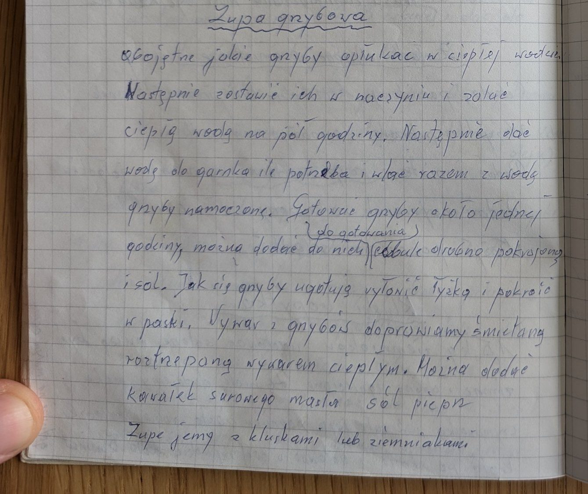
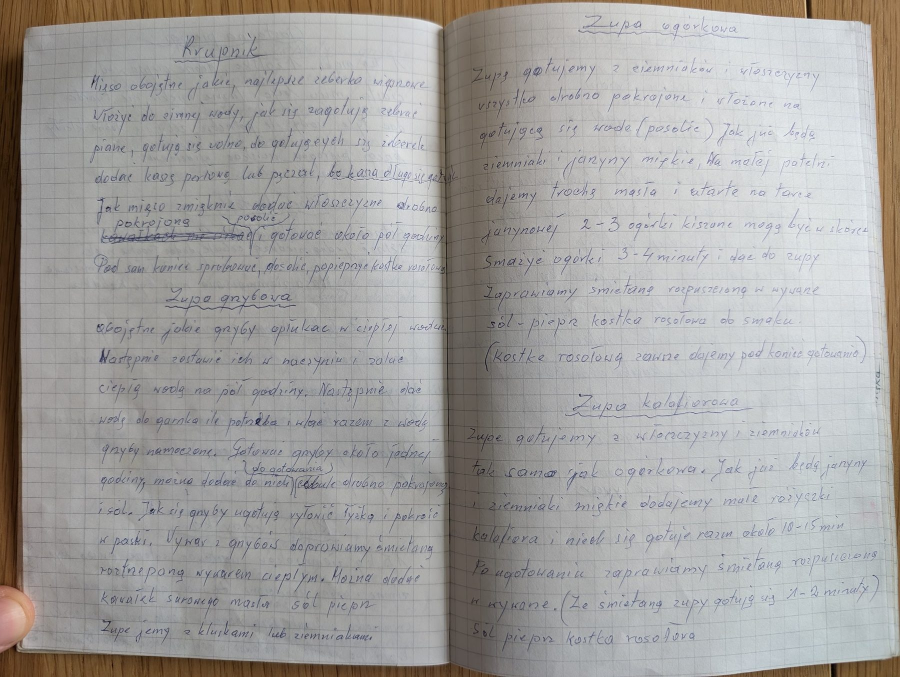

Zupa grzybowa


Składniki
- suszone grzyby (dowolne)
- woda
- cebula
- sól, pieprz
- śmietana
- kawałek masła
- kluski lub ziemniaki
Przygotowanie
- Grzyby opłukać w ciepłej wodzie, zalać ciepłą wodą i zostawić na pół godziny.
- Do garnka dać wody ile potrzeba i wlać grzyby razem z wodą z moczenia.
- Gotować około godziny; można dodać drobno pokrojoną cebulę i sól.
- Ugotowane grzyby wyłowić łyżką i pokroić w paski.
- Wywar doprawić śmietaną roztrzepaną ciepłym wywarem, można dodać kawałek masła, sól i pieprz.
- Jeść z kluskami lub ziemniakami.
Oryginalny zapis
Zupa grzybowa
Obojętne jakie grzyby opłukać w ciepłej wodzie.
Następnie zostawić ich w naczyniu i zalać
ciepłą wodą na pół godziny. Następnie dać
wodę do garnka ile potrzeba i wlać razem z wodą
grzyby namoczone. Gotować grzyby około jednej
(do gotowania)
godziny, można dodać do nich cebulę drobno pokrojoną
i sól. Jak się grzyby ugotują wyłowić łyżką i pokroić
w paski. Wywar z grzybów doprawiamy śmietaną
roztrzepaną wywarem ciepłym. Można dodać
kawałek surowego masła sól pieprz
Zupę jemy z kluskami lub ziemniakami